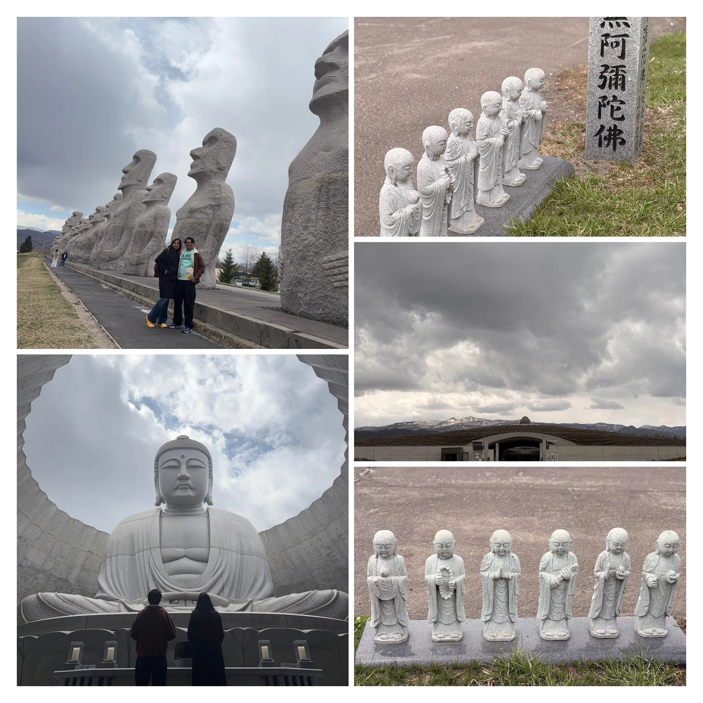
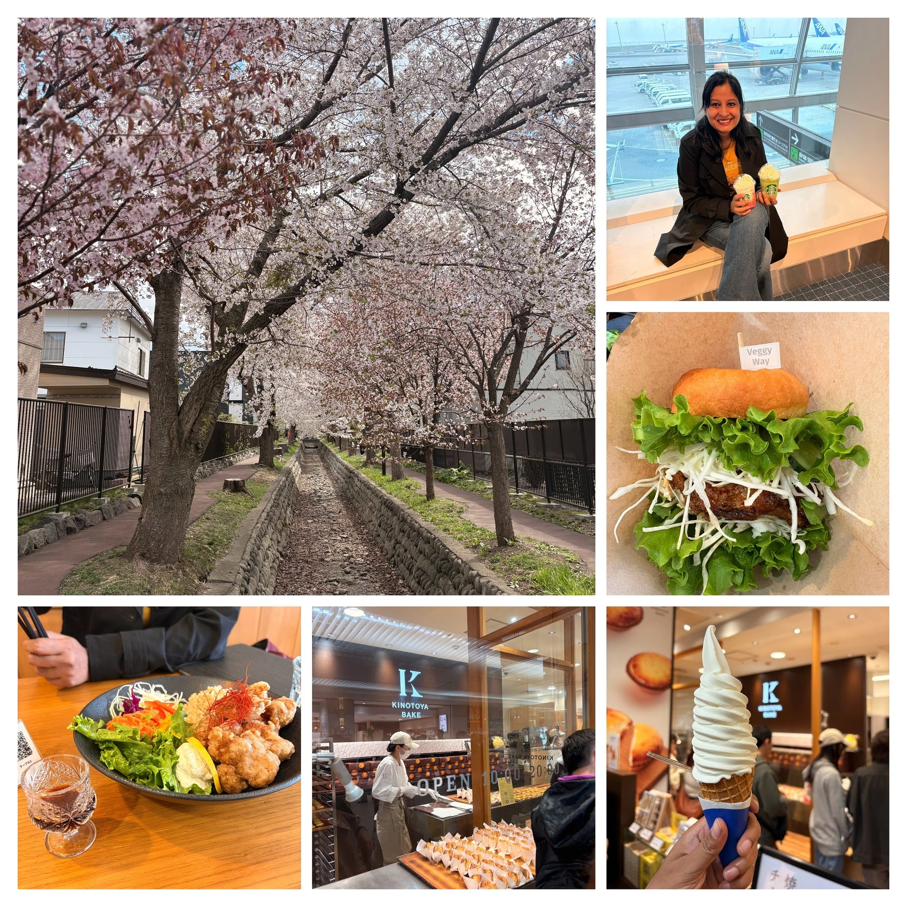
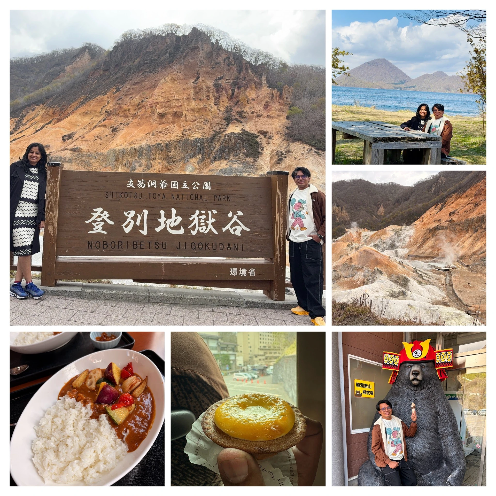
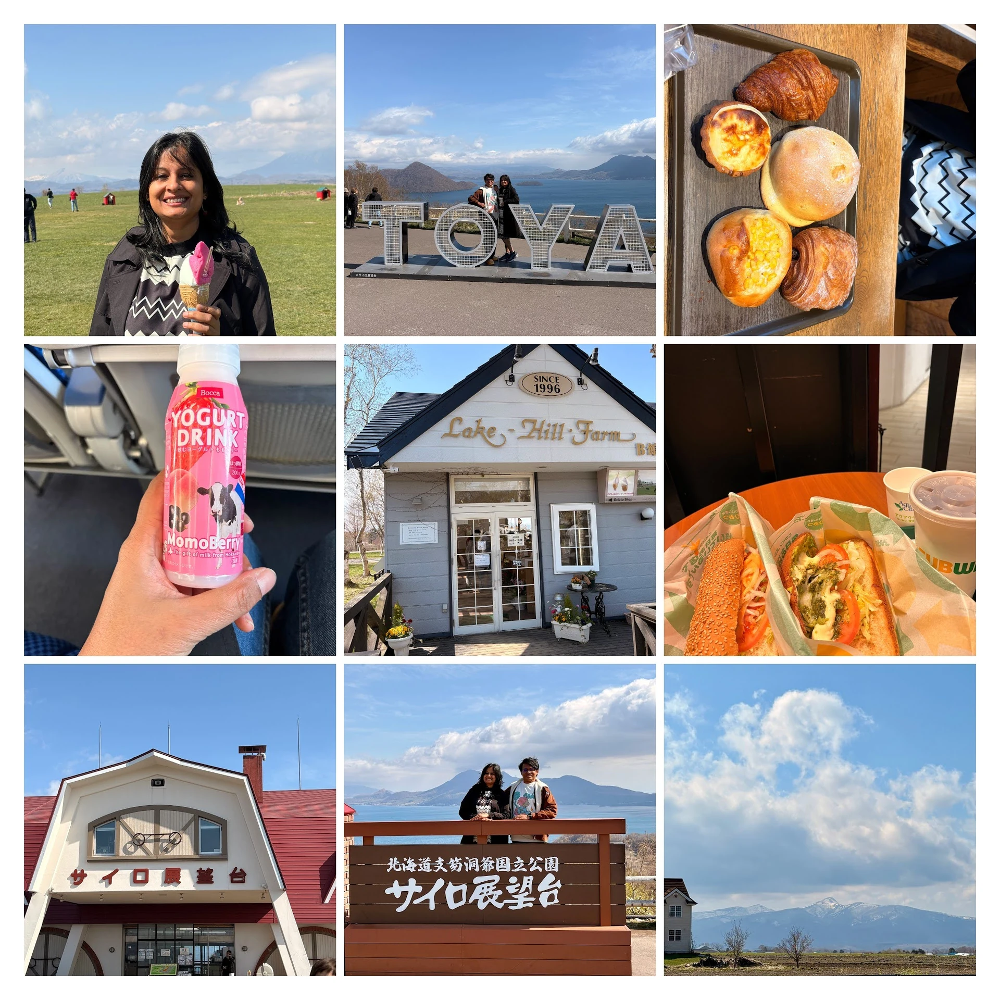

Day 1: 29th April
The 5 a.m. Bus & Becoming "Airport People"
Our Sapporo flight was at 7:20 a.m. out of Haneda, and somewhere between booking it and surviving it, we discovered the Airport Limousine bus — a quietly genius service that loops the city before sunrise, picks up half-awake travellers from stops that are conveniently within walking distance of every major hotel, and delivers them, calmly, to whichever of Tokyo's two airports they're flying out of (we got Haneda; Narita gets its own bus, its own crowd, its own slower morning).
We were at our stop by 5 a.m. We were at Haneda by 6. We were through security by 6:10 — no bag drop, no queue theatre, no shoes being barked at. Just a quiet line, a polite nod, and a tray of complimentary slippers for anyone whose shoes had to come off. The whole thing took less time than making chai at home.
Which left us with the kind of windfall you only get at 6 a.m. in an airport you've already cleared: time. So we did the most touristy thing imaginable and walked into Starbucks. A Sakura Strawberry Latte. A Matcha Latte. Pink and green in our hands, like we were starring in someone else's vacation reel. We don't do Starbucks back home — it feels indulgent, overpriced, performative. But here, somehow, it was just… normal. Reasonably priced, even. We sipped, we people-watched, we boarded.
Landing in Hokkaido
Sapporo's New Chitose Airport is well outside the city, so we hopped on yet another airport bus for the ~1 hour 15 minute ride into town. Hokkaido announces itself early: the air goes crisp, the buildings spread out, the mountains stop being far-away decoration and start hanging close. It is its own country inside Japan — quieter, colder, slower. And yet, as we leaned against the window, pink starting to peek out from between buildings — sakura. We had timed it just right. Hokkaido blooms weeks after Tokyo, so the cherry blossoms we'd already grieved in Kyoto were back, this time against a chillier sky.
Hill of the Buddha · Tadao Ando's Quiet Trick
We dropped bags at the hotel and went straight back out. The Hill of the Buddha is about 1.5 hours from central Sapporo — a real commitment for a first afternoon, and worth every minute. Designed by Tadao Ando, it's one of those places photos genuinely do not prepare you for. You approach through a long concrete tunnel, the air gets colder, the light narrows — and then the giant Buddha statue rises slowly into view, framed by hundreds of thousands of lavender plants. The lavender wasn't in bloom yet in April, but you could feel exactly what it will look like in summer.
You don't have to believe in anything in particular for the Buddha-in-the-middle-of-a-hill to do its quiet work on you. There's a stillness up there that feels lent to you, just for the visit.

The Sakura Detour (Get Off One Stop Early)
On the bus back into town, we'd been pressing our faces to the window the entire way, watching whole streets blush pink. So we did the obvious thing: got off one stop before ours, just to walk it. That unplanned half-hour — chilly air, fully-bloomed sakura, no agenda — turned into the most photographed stretch of our entire Japan trip. Chilly weather plus sakura is Sapporo's whole personality, and it is the kind of cherry-on-cake combination Honshu can't quite give you in April.
Lunch, Pole Town & the Ice Cream That Ruined Us
Lunch was at Holistic Bio Café Veggy Way — gentle, plant-forward, exactly the reset our bodies needed after a 5 a.m. start. Then we descended into Pole Town, the underground shopping arcade that begins right inside the metro station and seems to go on forever. It is a kilometre of shops, cafés and warmth — and a maze of impossible exits. We turned a corner, then another, and another, and somewhere along the way we accepted we were lost. Wonderfully lost.
This is where we met Hokkaido ice cream for the first time, and we have not been the same since. The dairy here lives up to its mythology — the soft-serve is creamier, milkier, slightly cooler in temperature, the kind of thing you eat slowly because you already know it's a one-off. We then proceeded to ruin our appetites for actual dinner by raiding two bakeries:
- Kintoya Bake — perfect little baked cheese tarts, warm on top, almost custardy inside.
- Donguri — the legend. Tray, tongs, an overwhelming wall of options, pick-and-pay chaos. We left with a bag that was heavier than our common sense.

Park Hotel · Our First 5-Star Reality Check
Most of our trip lived in 3-star budget hotels and hostels (with one 4-star "Kiori Exec" cameo). Sapporo was our first proper 5-star. Expectation, naturally, was sky-high. The reality was… good, but instructively human.
Real Talk: what a 5-star in Sapporo actually looked like ▾
Two complimentary 400 ml water bottles for the whole stay. Everything beyond that — chargeable. No AC (it's Hokkaido, you're not supposed to need one in April). The room ran warm at night, so we cracked open the heavy blackout curtains and slept behind the thin white ones — which, given Hokkaido's extremely early sunrise, would become a plot point the next morning. Comfortable bed, beautiful lobby, excellent service. The lesson: in Japan, "5-star" means service and finish, not American-style amenity overload. Recalibrate your expectations and you'll love it.
The Tour That Cancelled · A Klook Story
Over dinner we decided to outsource Day 2: Noboribetsu Hell Valley, Lake Toya, Bear Ranch, Mount Usu Ropeway — too far-flung for Hokkaido's modest public transport to handle in a single day. We booked a Klook tour for 7 a.m. the next morning, at around 7 p.m. the previous night. Less than 24 hours = no cancellation possible from the app.
An hour later, a WhatsApp message: the tour wasn't running tomorrow. Please cancel. I gently pointed out that I couldn't cancel — the cutoff had passed. What happened next still stops me when I think about it.
The tour operator came to our hotel. In person. Handed us the refund in cash. Apologised — repeatedly, deeply, in the way only a Japanese apology lands. There was no email, no "5–7 business days," no help-desk script. Just a person, doing the right thing, at 9 p.m., because that's how things are done here.
We stood there a little stunned, money in hand. Then — small miracle — we found a different tour bus service with morning availability, booked it, and went to sleep. 8 a.m. departure from Sapporo Station. We could finally rest.
Day 2: 30th April
The Sunrise That Tried to Trick Us
I woke up to a room full of light, sat up bolt upright, certain we had slept through everything. The clock said 4:30 a.m. Hokkaido in late spring does not believe in dawn the way the rest of us do — the sun is just up, fully committed, by half-four. (This, dear reader, is why hotels here issue blackout curtains as a moral imperative.) We laughed, lay back down, then got up properly and made it to the bus stop early.
Why We're Tour-Bus People Now
We're usually the "make our own itinerary, decode the timetable, walk everywhere" couple. Day 2 converted us, at least for Hokkaido. Travelling with a guide and a bus means no maps, no transfers, no logistics tax. The guide narrates the history as the countryside slides past. The stops are timed but never rushed. You eat, you nap, you stare out the window — and someone else carries the cognitive load.
We'd booked last-minute, so we got the back row. Underrated. You can fully recline, eat without an audience, and nobody is watching you do anything. Last-row life is good life.
Noboribetsu Hell Valley · Yes, Earned the Name
First stop: Noboribetsu Hell Valley. Volcanic terrain, sulphur in the air, steam rising from cracks in red-orange rock. It looks like a film set — the name is, for once, completely literal.
An honest aside: we've seen New Zealand's geothermal landscapes, and that earlier benchmark may have unfairly stolen Noboribetsu's thunder for us. (We're biased. We admit it.) On its own, it's spectacular. Just don't visit New Zealand first, is all I'm saying.

Bear Ranch & Mount Usu · The Skip We Don't Regret
Next: the Bear Ranch and Mount Usu Ropeway. Honest confession — we didn't take the gondola up, and we didn't pay to see the bears. Standing at the base, weighing the tickets against the queue, it just didn't feel like our kind of memory. So we used the time to shop instead: Hokkaido chocolates (worth the suitcase weight), a vegan ramen bowl that warmed us right through, and — yes — another ice cream. Hokkaido's dairy is famous because each region's milk tastes a little different, so every soft-serve is a slightly different soft-serve. Research, basically.
Lake Toya & the Two Surprise Farms
Then Lake Toya. Huge, calm, mountain-ringed — the kind of view that makes the whole bus go quiet. Our tour also rolled us through two local farms we didn't have on any list, each with their own yogurt and their own ice cream. We tried all of them. It is at this point on the trip that we accepted Hokkaido is a place you ice-cream your way through, and stopped pretending otherwise.

Back in Sapporo · Odori, TV Tower & One More Donguri Run
We rolled back into Sapporo by 4 p.m. with enough light and energy to walk through Odori Park — the famous green spine that cuts the city in half — and ride up the Sapporo TV Tower for a low-key but lovely city view. Dinner was, predictably, dysfunctional: a Subway sandwich (don't judge), followed by a second raid on Donguri because the first one was clearly insufficient research. We wandered the market, walked back to the Park Hotel, packed our bags. Early flight to Tokyo in the morning.
Hokkaido is the version of Japan no one warns you about — quieter, colder, bigger, and somehow more generous. Two days were not enough. Two weeks would be a good start.
Where It All Happened
Two days, one big island, a surprising amount of ground. Pan the map, click a pin — each one is a story above.
Must-Do in Sapporo
Our Two-Day Shortlist
- Hill of the Buddha · Tadao Ando's tunnel reveal — go even though it's far.
- Late-season sakura · Get off the bus a stop early and walk it.
- Pole Town Arcade · Warm, endless, gloriously confusing.
- Donguri & Kintoya Bake · Pastry haul, no regrets.
- Hokkaido ice cream · Anywhere. Everywhere. Multiple times.
- Noboribetsu Hell Valley · Volcanic, otherworldly, smells like sulphur.
- Mount Usu Ropeway · Crater lake on one side, ocean on the other.
- Lake Toya & dairy farms · Calm water, fresh yogurt, surprise stops.
- Sapporo TV Tower & Odori Park · A simple end-of-day city view.
- Airport Limousine Bus · The unsung hero of pre-dawn travel days.
Prefer a leaner read? Try the lighter, text-first edition.
⬇ Download Japan PDF — Lighter Edition
Join the conversation
Have a question, a tip, or a memory from the same place? Drop a comment below — no signup needed.